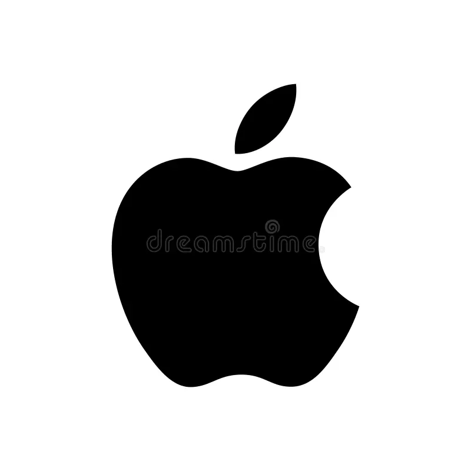

Está curioso ?
Bem, já que, você realmente quer aprender mais sobre o assunto, aqui vão algumas curiosidades sobre o assunto. Aproveite!!!
O Nascimento da Apple
A Apple Computer, Inc. foi fundada em 1º de abril de 1976 por Steve Jobs, Steve Wozniak e Ronald Wayne. A primeira ideia surgiu quando Jobs e Wozniak estavam na garagem dos pais de Jobs, trabalhando em um projeto que viria a se tornar o Apple I.
O Primeiro Computador da Apple
O Apple I, lançado em julho de 1976, foi o primeiro produto da empresa. Ele foi vendido como um kit de montagem por $666,66. Curiosamente, o preço foi escolhido por Wozniak porque ele achava que era um número "fofo".
Os mais famosos
Em sua maioria, os computadores sempre fizeram bastante susseço entre as pessoas, com sistemas de navegação unicos e diferentes, conquistam o povo. Por isso, aqui esta uma ista dos 10 computadores mais famosos da apple, após o lançamento do "apple I"!
| Posição | Modelo | Ano de Lançamento | Descrição |
|---|---|---|---|
| 1 | iMac G3 | 1998 | Revolucionou o design de computadores com seu estilo colorido e inovador. |
| 2 | Macintosh 128K | 1984 | O primeiro Macintosh, famoso por sua interface gráfica de usuário. |
| 3 | MacBook Air | 2008 | Introduziu o conceito de laptop ultra-fino e leve, marcando um novo padrão. |
| 4 | Apple II | 1977 | Um dos primeiros computadores pessoais de sucesso comercial. |
| 5 | MacBook Pro | 2006 | Introduziu os primeiros processadores Intel na linha MacBook e ganhou popularidade por seu desempenho. |
| 6 | iMac G4 | 2002 | Conhecido como "iMac com o braço de luz", famoso por seu design inovador. |
| 7 | Mac Pro | 2006 | Um modelo de desktop de alto desempenho voltado para profissionais criativos. |
| 8 | Macintosh Plus | 1986 | Um dos primeiros Macintosh a ter expansão de memória e o primeiro a incluir a interface SCSI. |
| 9 | Macintosh SE | 1987 | Introduziu um design compacto e acessível com a opção de expansão interna. |
| 10 | Macintosh Classic | 1990 | Uma versão mais acessível do Macintosh SE, popular no mercado de entrada. |
O Papel de Ronald Wayne
Ronald Wayne, um dos cofundadores, vendeu sua participação de 10% na empresa por apenas $800 apenas 12 dias após a fundação. Se ele tivesse mantido sua participação, ela teria valido bilhões hoje.
A Revolução do Apple II
Lançado em abril de 1977, o Apple II foi um dos primeiros computadores pessoais a ter um design bem-sucedido e a atingir o mercado em larga escala. Foi o primeiro computador a ter uma caixa plástica moldada em vez de uma caixa de madeira, o que ajudou a estabelecer o padrão para os computadores pessoais.
O segredo por trás do logotipo da maçã mordida
Maçã mordida da Apple De acordo com Jobs, ele foi inspirado a usar uma maçã depois de visitar uma fazenda de maçã, porque a fruta era "divertida, espirituosa e não intimidante".
Foi amplamente especulado que a mordida na maçã era uma homenagem a Alan Turing, o fundador da computação, que havia cometido suicídio consumindo cianureto. Uma maçã comida pela metade foi encontrada ao lado de seu corpo.
Mas a empresa insiste que este não é o caso, e que a mordida foi adicionada à maçã para que não seja confundida com uma cereja.
As várias faces de mim!
Antes da, tão conhecida, maçã mordida, várias outras "faces" foram utilizadas por ela. Veja à seguir:
Logotipo da Apple Computer Co. (1976-1977):
O primeiro logotipo da Apple foi criado por Ronald Wayne, um dos cofundadores da empresa. Ele mostrava Isaac Newton sentado sob uma maçã, com uma fita que dizia “Apple Computer Co.” e a frase “A Mind Forever Voyaging Through Strange Seas of Thought Alone”. Era um logotipo bastante detalhado e com um estilo vitoriano.
Logotipo da Apple com Arco-Íris (1977-1998):
Em 1977, Apple adotou o logotipo da maçã mordida com listras coloridas, conhecido como o logotipo "Arco-Íris". Criado por Rob Janoff, o logotipo apresentava uma maçã mordida em um gradiente de cores do arco-íris. Este design foi usado até 1998 e se tornou um dos logotipos mais icônicos da história da empresa.

Logotipo da Apple Monocromático (1998-2000):
Em 1998, Apple começou a usar uma versão monocromática do logotipo da maçã mordida, substituindo as cores do arco-íris por um design mais simples e elegante em preto e branco. Esse logotipo estava em linha com o design mais minimalista da época e refletia a estética dos novos produtos da Apple.
